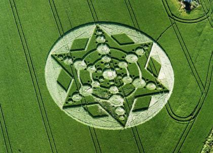

《探索生命的组合》
（四） 生命原图是什么？佛是什么？弥漫在虚空中的无形的非物质态的生命或虚空能量组织，或所谓的历史生命的永恒的集体记忆又是什么？生命的原性是什么？基因图密码的核心组织是什么？亦即生命的本质是什么？
是感觉。它的结构尤如单细胞，规范化的几何图形是个同心圆，即两个一大一小套在一起的圆。这个同心圆是晶莹玉白当中黑。黑的内圆叫觉，白的外圆叫感。用汉字表示是个回归的回字。这也是宇宙生命基因图密码核心中的宇宙印记。由于这个印记的存在，人类以及脊椎动物普遍存在瑞典科学家方迪教授说的"死亡冲动"。我在《真实的虚幻》一文里称之为"死亡脉冲"。由于这种脉冲在特定时空条件下的启动作用，使人和脊椎动物都具有回归自然、热爱自然的倾向。这种倾向就是生命的逆向转化，亦即对自由的向往。
心经曰：观自在菩萨，行深般若波罗蜜多时，照见五蕴皆空。
这句讲的是人回归修行，即出世的方法。在古宗教中就是坐禅。亦即通过坐禅开发人的意识的潜能：自性本空。
在古代并不是佛家才有禅。以佛门的立点看，禅有佛教禅和非佛教禅之分。非佛教禅又分类为原始禅或古巫禅，瑜伽禅，外教禅，外道禅。佛教禅又分为释迦传的如来禅，释迦教外别传的明心见性的祖师禅，以及大日如来传的秘密禅。
但所有的禅必须有个共性，即见月。凡是不见月的禅不叫禅,只能叫练习打坐或枯木坐。
什么是禅？禅即是婵，是月。所谓的坐禅实际是个观字，观什么？观月。这个月就叫性，又称之为自。因为它是你自己的性，回归的你就是它！所以称之为自。性光具足了，则这个自就在，若性光不具足呢？则它不在，依然是潜龙勿用的状态。
在古易中，把这个自性比拟为潜龙。修行者在打坐时要把它从最底层的海轮位，提至水轮位，以及丹田、心轮、眉心轮乃至梵天轮。
提至丹田位时，叫见龙在田。提至眉心月轮位时，叫飞龙在天。如果加大武火再向上提那就行至梵天轮甚至冲出梵天轮了。此时叫亢龙有悔。
亢龙为什么有悔呢？因为花开了……花开现佛了，人见花哭，佛见花笑。
故而心经开篇第一句就是：看看你的那个自具足没有，它在不在？如果自具足了，你又具足了菩萨心，不会亢龙有悔了。那么就从此岸让你的自去渡往彼岸吧。那时你的自就会通透虚空，照见五蕴以及本性皆空。
心经第二句是"舍利子，色不异空，空不异色。色即是空，空即是色。受想行识亦复如是"。
要走的你已是菩萨了，即无我相了。那么这个无我相已丢弃人身的你，又叫个什么名字呢？就叫舍利子吧。这个舍利子是什么性质的东西呢？亦色亦空，色空不二。它是色受想行识这五蕴皆空。
心经第三句是："舍利子，是诸法空相……"
为什么舍利子五蕴皆空呢？因为舍利子已无我相人相众生相寿者相，它已失却了种种法相，舍利子已是空相，它不仅是法相空，亦是空法相……
好了，心经的后面还讲了很多。本文不是专门解经的，解此几句仅是为了阐述主题。
二十一世纪是个生命科学的世纪，人类已经感到急切的需要认知自我。因为在富足的物质生活之后，心灵依然空虚，是由于不知道根在哪儿？
没有根的人类是空旷的，没有根的人类是绝望的。在这百千万亿尽浮台的茫茫宇宙中，人类显得那么孤独，尤如孤独的乘坐航天器漫游在无边无际的虚空。
人类终于能抛弃种种偏见去研究生命，也许西洋的科学与东方古老的神秘相结合，就是打开生命秘密的大门的钥匙。 妙航写于二OO六年二月十日

| 上 一 頁 | 回 主 頁 |